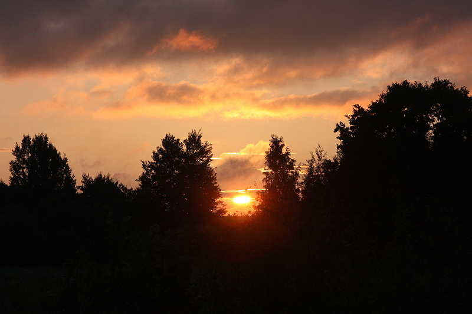
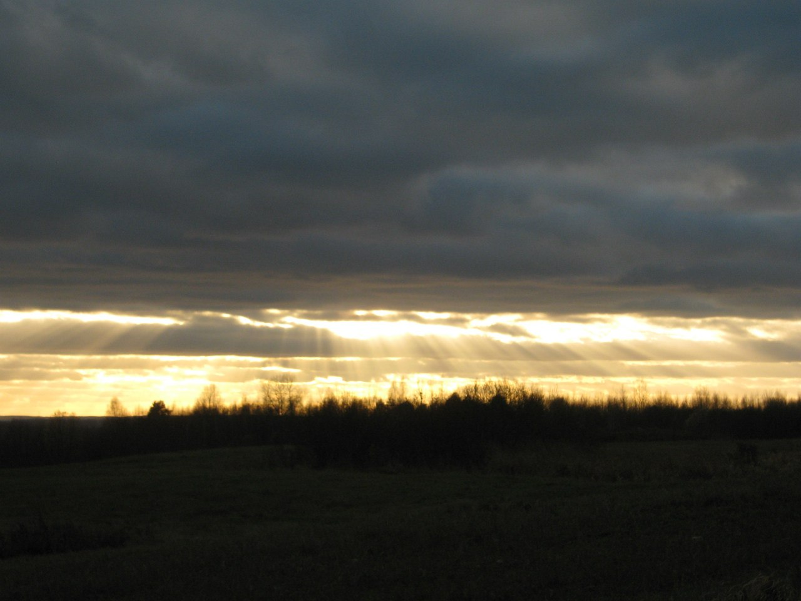

Архаічныя спевы

Славянская культура настолькі глыбокая і шматслойныя, што з пакалення ў пакаленне перадаваліся паданні пра сонца як бажаство. Да нашых дзён захавалася некалькі летапісных і народных паданняў пра ўшанаванне сонца славянамі. Найстаражытныя з іх належыць арабскім пісьменнікам Х стагоддзя Аль-Масудзі і Ібраеву бен-Весиф-Шах. У летапісах сустракаюцца выразы, якія ўскосна сведчаць пра старадаўнія вераванні нашых продкаў і ўдзел сонца ў чалавечых справах: «сего не потерпя солнце лучи скры» - «погибе солнце и бысть яко месяц, его же глаголют невегласи: снедаем солнце».
Сонца было ўшанавана з аднаго боку як нябеснае свяціла, якое знаходзіцца ў сярэдзіне свету, усё асвятляе, і як Бог, як Цар-сонца, як святы Уладар неба, зямлі і людзей. Верылі, што ад яго залежаць зоркі і ветры, ураджай і надвор'е; верылі, што людзям добрым сонца дапамагае, благіх - карае. Шанаванне Сонца знайшло адлюстраванне ва ўкладзе славян. Успамін пра яго можна знайсці ў розных крыніцах: казках; абрадавых песнях; загадках; замовах.

Абрадавыя песні з'яўляюцца адным з элементаў традыцыйнай культуры, які зведаў меншыя змены. Падчас абрадавых песень нашы продкі размаўлялі з сонцам. Лічылася, што яно ахоўвае людзей ад нячыстай сілы. Бо, як толькі на зямлю пранікаюць першыя прамяні, нячыстая сіла разбягаецца.
Запрашаем Вас 3 верасня на левы бераг Заходняй Дзвіны, каб разам з намі сустракаць Сонца пад старажытныя спевы, стаць непасрэдным удзельнікам сакральнага дзеяння.